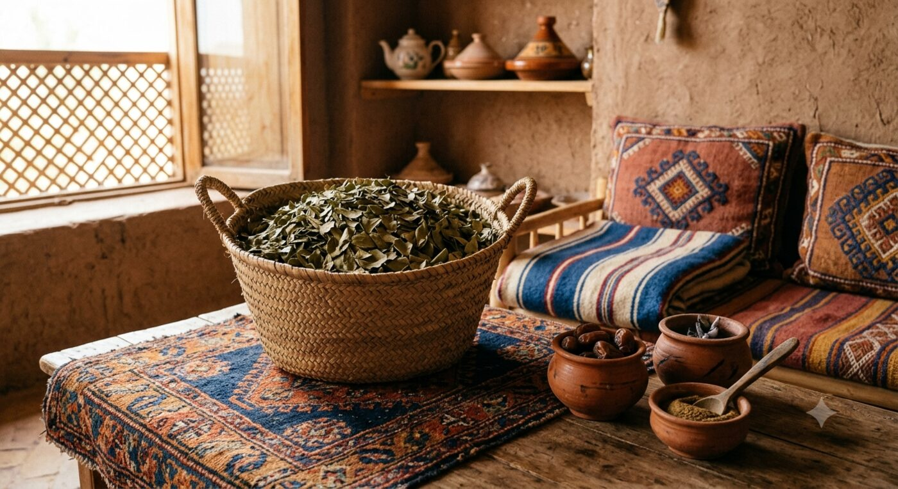

Moyen-Orient : le sidr dans le rituel funéraire du ghusl
Dans la tradition islamique, le ghusl mayyit — le lavage rituel du corps avant l'ensevelissement — comprend traditionnellement trois lavages successifs : un lavage à l'eau mélangée à des feuilles de sidr, un lavage à l'eau camphrée, puis un dernier lavage à l'eau pure (Sistani.org, méthode du ghusl du défunt). Cette pratique s'appuie sur un hadith authentique dans lequel le prophète Muhammad (pbsl) aurait demandé : « Lavez-la trois fois, ou plus si vous le jugez nécessaire, avec de l'eau et du sidr (des feuilles parfumées), puis appliquez du camphre après le dernier lavage » (Muslim Funeral Services, le ghusl). Le dosage traditionnel précise que la quantité de feuilles de sidr ne doit être ni trop importante, au point de dénaturer l'eau, ni trop faible, au point qu'on ne puisse plus dire que l'eau en contient (Sistani.org).
Maghreb : la « sedra », secret de beauté transmis de génération en génération
Au Maroc, en Algérie et en Tunisie, c'est le jujubier sauvage Ziziphus lotus — localement appelé « sedra » — qui fournit les feuilles traditionnellement utilisées pour le soin des cheveux. Une étude publiée dans la revue Phytothérapie confirme que les feuilles de sedra (« wrâq sedra ») figurent bien dans la pharmacopée marocaine pour cet usage capillaire spécifique (Phytothérapie, Zizyphus lotus : jujubier sauvage). Le duo sidr et henné constitue, dans de nombreux foyers du monde arabe, la base d'un rituel capillaire transmis de mère en fille, combinant nettoyage doux et fixation de la coloration végétale (Biorient).
Yémen et Corne de l'Afrique : l'arbre nourricier et le miel de sidr
Au Yémen, en Somalie et au Soudan, le sidr (Ziziphus spina-christi) est aussi un arbre nourricier dont on exploite le fruit, les feuilles, les racines et le bois. Ses fleurs produisent l'un des miels mono-floraux les plus réputés au monde, récolté durant une brève saison hivernale lorsque l'arbre fleurit et que peu d'autres plantes mellifères sont disponibles ; les apiculteurs déplacent alors leurs ruches, parfois sur des centaines de kilomètres, pour suivre la floraison (Raw Honey Guide, guide du miel de Somalie ; Hives of Yemen). Selon Yemen Sidr Honey, les feuilles sont séchées puis réduites en poudre depuis longtemps pour laver cheveux et peau dans cette région (Yemen Sidr Honey, The Sidr Tree Explained).
Asie du Sud : le « ber » dans la pharmacopée ayurvédique
En Inde et dans le sous-continent indien, c'est une espèce différente, Ziziphus mauritiana — appelée « ber » en hindi — qui est traditionnellement utilisée. Ses feuilles, son écorce, ses racines et ses graines figurent depuis longtemps dans la médecine ayurvédique pour traiter un large éventail de troubles, dont les soins capillaires, les plaies et les affections cutanées (Bimbima, usages médicinaux du ber). Les phytochimistes y ont identifié des flavonoïdes, saponines, tanins et alcaloïdes aux propriétés antioxydantes et antimicrobiennes (Ask Ayurveda, Ziziphus mauritiana).
Un usage spirituel également répandu dans le monde arabo-musulman
Au-delà de la cosmétique, les feuilles de jujubier sont également associées, dans certaines pratiques populaires du monde musulman, à la roqya — une pratique de récitation coranique parfois accompagnée de bains aux feuilles de sidr, destinée selon la croyance populaire à se prémunir du mauvais œil ou de la sorcellerie (Natureluxy, feuilles de jujubier). Il s'agit là d'une croyance religieuse et culturelle que nous rapportons à titre informatif, sans prétendre à une quelconque validation scientifique de son efficacité contre ces phénomènes.
Un point commun : la feuille comme geste de purification
Ce tour d'horizon révèle un fil conducteur : dans presque toutes ces cultures, la feuille de sidr est associée à un geste de purification — qu'il soit funéraire, capillaire, corporel ou spirituel. Cette convergence culturelle, observée sur un territoire qui va du Maghreb à l'Inde, explique en grande partie pourquoi le sidr continue d'occuper une place particulière dans les rituels de beauté et de soin contemporains, y compris en dehors de ses régions d'origine.

Sources
- Sistani.org — Method of performing the ghusl given to a corpse
- Muslim Funeral Services — Ghusl
- Phytothérapie (Springer) — Zizyphus lotus (L.) Desf. : jujubier sauvage
- Biorient — Sidr en poudre pour les cheveux
- Raw Honey Guide — Somalia Honey Guide
- Hives of Yemen — The story of the sacred Sidr tree
- Yemen Sidr Honey — The Sidr Tree Explained
- Bimbima — Medicinal Uses of Ber (Indian Jujube)
- Ask Ayurveda — Ziziphus mauritiana